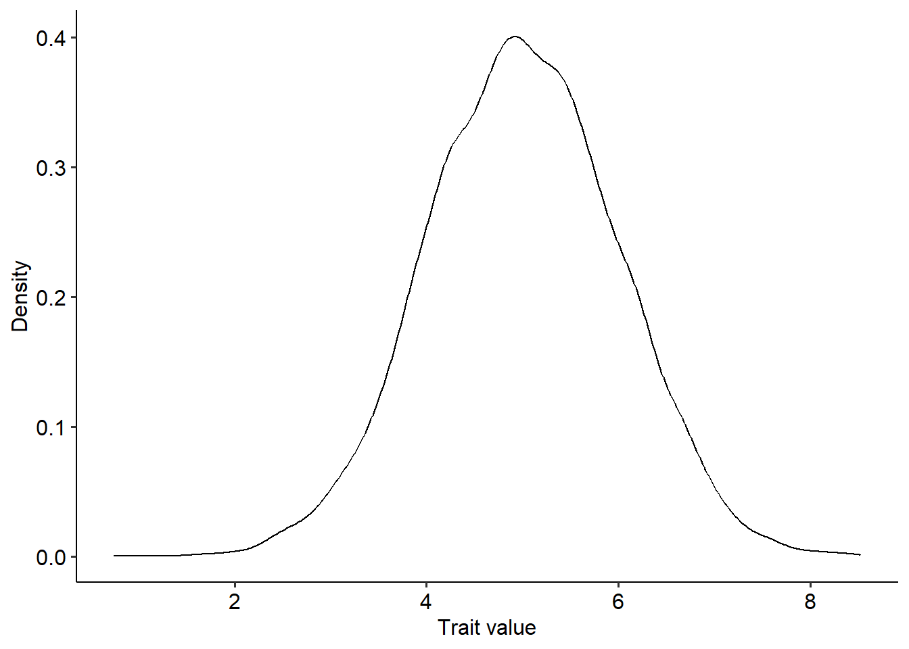
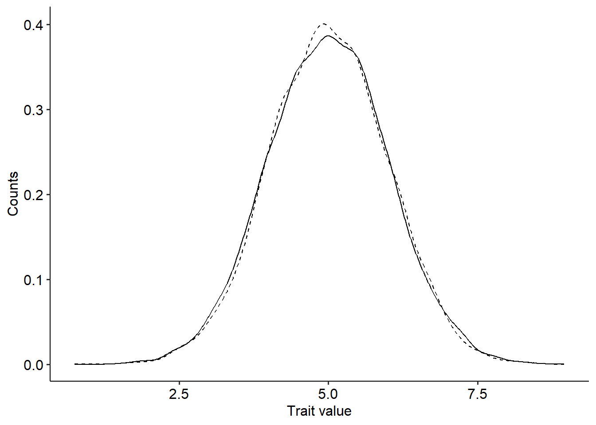

4 Exercise: Simulating evolution using the Price theorem
4.1 Simulating evolutionary changes in allele frequencies
In our second lecture we studied and derived the Price theorem (Price 1970) that can be used to predict how the mean value of any measurable property of a population change from one generation to the other. For this exercise section, we will use the Price theorem to gain more intuition about how the moments of the distribution of traits in a population can evolve by natural selection. Building upon the core results of the theorem, We will also study how we can predict the mode of selection in a population (directional, stabilizing and disruptive) using linear regressions.
We begin with the Price theorem, that can be expressed as the following equation (Rice 2005):
\[ \Delta \overline{z}=\frac{1}{\overline{W}}\left[Cov(W, z) + E(W\overline{\delta}) \right] \] As we studied during the lecture, the equation is comprised of two terms. The first term, \(\frac{1}{\overline{W}}Cov(W, z)\) encompass the changes due to differential survival and reproduction, while the second one, comprises changes resulting from any process involved in reproduction. For this exercise section we will assume that \(E(W\overline{\delta})=0\) and will work with the simplified version of the Price theorem, \(\Delta \overline{z}=\frac{1}{\overline{W}}Cov(W, z)\).
We begin simulating a measurable trait, \(z\), that follows a normal distribution with mean \(\mu=5.0\) and \(\sigma^2=1.0\) in a population of 10000 individuals:
library(ggplot2)
library(ggpubr)
n=10000 #Population size
z_u=5 #Mean trait value
z_var=1 #Variance
z = rnorm(n, mean=z_u, sd=sqrt(z_var)) #Sampling from a normal distribution with mean=5 and variance=1 (the standard deviation is equal to the square root of the variance).
# Plotting the distribution
ggplot(data=data.frame(z))+
geom_density(aes(x=z))+
xlab("Trait value")+ylab("Density")+
theme_pubr()
Now that we have a distribution of traits, we can begin to use the Price theorem to predict how the moments of this distribution can change because of differential survival and reproduction. Here we will focus on the first and second moments of the distribution - the mean and the variance - but the theorem can also be used for other higher order moments. As examples, we will use three different types of functions for how the fitness of individuals vary with trait values: (1) \(W=1+c+\epsilon\); (2) \(W=1+\beta z +\epsilon\) (3) \(W=e^{-\alpha\left(\theta-z+\epsilon\right)^2}\); where \(c\) is a constant; \(\beta\), \(\alpha\) and \(\theta\) are parameters that control the shape of the functions; and \(\epsilon\) is a small amount of random noise that we will sample from a normal distribution. In the code block below we define these functions.
#Defining the parameters of the fitness functions:
e=rnorm(n, mean=0, sd=0.05) #Sampling random noise
c=1 # Parameter of fitness function (1)
beta=0.5 # Parameter of fitness functions (2)
alpha=0.5; theta=4.0 # Parameters of fitness function (3)
w1=1+c+e #Fitness function (1)
w2=1+beta*z+e #Fitness function (2)
w3=1+exp(-alpha*(theta-z+e)^2) #Fitness function (3)Now that we have trait values and their corresponding fitness, we can use Price’s theorem to predict the change in the mean and variance of the trait distribution from one generation to the other. For the mean, we need to compute the covariance between trait values and fitness, \(Cov(W,z)\), while for the variance, we need to compute the covariance between fitness and the squared deviation of trait values to the mean, \(Cov\left[W, (z-\overline{z})^2\right]\). Then, we divide the two covariances by the average fitness of the population, \(\overline{W}\). Finally, we can plot the new distribution on top of the old one. The code to perform these steps for the fitness function \(W=1+c+\epsilon\) is as follows:
delta_z=cov(w1,z)/mean(w1) #Change in the mean of z
delta_zvar=cov(w1,(z-mean(z))^2)/mean(w1) #Change in the variance of z
# Getting new distribution of trait values
z_new=rnorm(n, mean=z_u+delta_z, sd=sqrt(z_var+delta_z))
ggplot(data=data.frame(z=z, z_new=z_new))+
geom_density(aes(x=z), linetype="dashed")+
geom_density(aes(x=z_new))+
xlab("Trait value")+ylab("Counts")+
theme_pubr()
In the figure above, the dashed line represent the previous trait distribution, while the solid line the new one. The distributions look pretty much the same and the change in the mean and variance of the distribution of trait values is negligible. Considering the fitness function \(W=1+c+\epsilon\), try to explain why there was no change in the distribution. Use the code above to predict how the distribution changes for the other two fitness functions. What differences can you observe?
4.2 The regression of fitness on phenotypes and the modes of selection
Now that we know how to compute the change in the mean and variance of the distribution of traits in a population, we can try to gain intuition about the different modes of selection. To do so, we will use the two remaining fitness functions, \(W=1+\beta z +\epsilon\) and \(W=e^{-\alpha\left(\theta-z\right)^2+\epsilon}\). In the lecture we studied that the Price theorem can be rewritten as a regression of fitness on trait values, as follows:
\[ \Delta \overline{z}=\frac{1}{\overline{W}}\beta_{(W,z)} Var(z) \] From the above equation, we can study how natural selection drives the evolution of the mean and the variance of trait values with the corresponding regression coefficients. These regression coefficients can be computed from the covariances and variances as \(\beta_{(W,z)}=\frac{Cov(W,z)}{Var(z)}\). When the trait itself is \((z-\overline{z})^2\), the regression coefficient can be computed as \(\beta_{\left[W,(z-\overline{z})^2\right]}=\frac{Cov\left[W,(z-\overline{z})^2\right]}{Var\left[(z-\overline{z})^2\right]}\). When the regression coefficient of fitness on the trait \(z\) is non zero, the trait is under directional selection. Similarly, if the regression coefficient of fitness on \((z-\overline{z})^2\) is non zero, the trait is either under stabilizing selection (\(\beta_{\left[W,(z-\overline{z})^2\right]}<0\)) or disruptive selection (\(\beta_{\left[W,(z-\overline{z})^2\right]}>0\)). For the fitness functions that we are going to use in this part of the exercise section, we can visually assess the modes of selection acting on trait \(z\). The code to do so is reproduced below:
library(patchwork)
# Creating a data frame with variables z, the squared deviations of z to the mean, and the fitness of individuals in the population when using fitness functions (2) and (3)
z_df = data.frame(z=z, z2=(z-mean(z))^2, w2=w2, w3=w3)
# Creating plots with the regression between z and w2, as well as (z-mean(z))^2 for w2
p1 = ggplot(data=z_df, aes(x=z, y=w2))+
geom_point()+
xlab("Trait values")+ylab("Fitness (function #2)")+
geom_smooth(method="lm", se=F)+
theme_pubr()
p2 = ggplot(data=z_df, aes(x=z2, y=w2))+
geom_point()+
xlab("Squared deviation of trait values to the mean")+ylab("Fitness (function #2)")+
geom_smooth(method="lm", se=F)+
theme_pubr()
# Creating plots with the regression between z and w2, as well as (z-mean(z))^2 for w3
p3 = ggplot(data=z_df, aes(x=z, y=w3))+
geom_point()+
xlab("Trait values")+ylab("Fitness (function #3)")+
geom_smooth(method="lm", se=F)+
theme_pubr()
p4 = ggplot(data=z_df, aes(x=z2, y=w3))+
geom_point()+
xlab("Squared deviation of trait values to the mean")+ylab("Fitness (function #3)")+
geom_smooth(method="lm", se=F)+
theme_pubr()
# Combining all plots using the patchwork package
p1+p2+p3+p4 + plot_annotation(tag_levels=c("a"))## `geom_smooth()` using formula = 'y ~ x'
## `geom_smooth()` using formula = 'y ~ x'
## `geom_smooth()` using formula = 'y ~ x'
## `geom_smooth()` using formula = 'y ~ x'From the plots above, try to answer the following questions:
- What are the modes of selection for the fitness functions (2) and (3)?
- What would be a possible biological interpretation of the parameter \(\theta\) in the fitness function \(W=e^{-\alpha\left(\theta-z+\epsilon\right)^2}\)?
- Try changing both \(\theta\) (e.g. to \(\theta=6.0\) instead of \(\theta=4.0\)) and \(\alpha\). How these parameters change the relationship between fitness, trait values, and the regression coefficients?